History · 2019 to 2023
What the planning file says
Facts and figures from the flood scheme’s planning application and environmental impact report.
Where the files are
Each planning file below is placed on the map by the site it covers. Select a marker to read what that file says about the river. Positions are approximate, taken from the site addresses, and the blue line is today’s mapped course of the Poddle.
River line © OpenStreetMap contributors. Marker positions are approximate, from the site addresses.
Where this comes from
The Poddle flood scheme was a joint application by South Dublin County Council and Dublin City Council, with the Office of Public Works, to An Bord Pleanála (case 306725). The application includes a planning report, an environmental impact assessment report (EIAR) and a heritage chapter that rewrites the river’s history from the maps and excavations. This page gathers the details that are not on the other pages, from the full documents, which are linked below. It also draws on three Dublin City Council planning applications: the Tenters Blackpitts drawings (2768/09), a mixed-use scheme on Donore Avenue (4156/06) and the Ship Street office and convention centre scheme (4223/18).
The river in numbers
The EIAR gives the river’s length as about 11.6 km, and its catchment as about 16.4 km² (16,400 hectares). Its non-technical summary rounds the length to about 10 km. The river rises at Cookstown, north of Tallaght, and flows through Tymon Park, under the M50, past Templeogue, Kimmage, Mount Jerome and Harold’s Cross, and crosses under the Grand Canal before running under the city to the Liffey at Wellington Quay. The lower and middle reaches are heavily urbanised, culverted and partly channelled.
Dublin City Council’s presentation on the scheme says the river once powered 52 mills and commercial enterprises along its course, and that it has 15 associated watercourses.

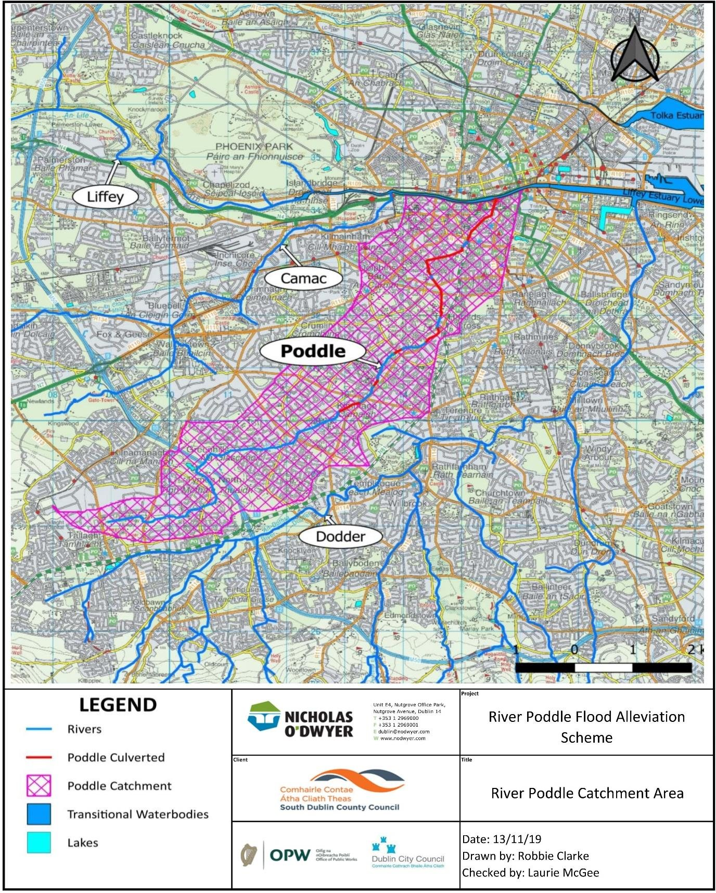
Flood history in the report
The planning report lists the significant floods as August 1986, June 1993, November 2000, September 2008 and October 2011.
On 25 August 1986, Hurricane Charlie seriously affected 80 households and 5 commercial properties from Kimmage Cross Roads to the Grand Canal. In November 2000, 103 mm of rain fell in 48 hours and the banks broke at Kimmage. In June 1993 the river overtopped after rainfall estimated at between a 1-in-100 and 1-in-250-year event, but the flooding was relatively minor. In September 2008, 58 mm fell over 11 hours in Kimmage.
The October 2011 flood is the one that led to the scheme. Up to 90 mm fell in six hours, more than the 1-in-100-year level at the gauges. It flooded Our Lady’s Hospice, Greenmount Avenue, Boyne Court and Gandon Close in Harold’s Cross, and the river burst its banks at Ravensdale Park. Over 50 properties flooded.

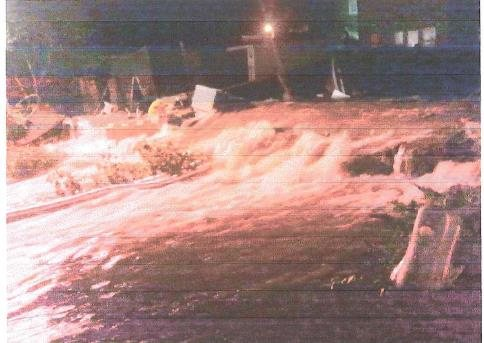

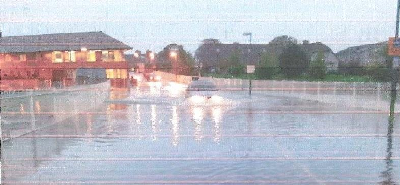
The scheme, place by place
The scheme protects against a flood with a 1% chance of happening in any year, and assumes that 60% of the 12 major culverts, and 40% of the others, are blocked. It adds a freeboard of 500 mm to embankments and 300 mm to walls. The report says 921 properties are protected, out of 1,377 at risk, and that more than 200 properties at Whitehall, Mount Argus Road and the Coombe remain at risk of surface-water flooding, which the scheme does not cover.
At Tymon Park a flood storage embankment and flow control structure hold back 66,000 cubic metres and limit the flow passed downstream to 748 litres a second, the 2-year flow. An integrated constructed wetland improves water quality, and floating nesting platforms go onto Tymon Lake. At Whitehall Park the channel is realigned and walls are built around the Lakelands overflow. At Ravensdale Park flood walls 1.1 to 1.35 m high create about 800 cubic metres of extra storage. St Martin’s Drive gets a 1.1 m wall, and there are further walls at the back of Fortfield Road and at Mount Argus Close.
Flap valves are fitted to every culvert that drains to the river. Manholes are sealed at Poddle Park, Ravensdale Park, St Teresa’s Gardens, Donore Avenue and the National Stadium. More than 50 culverts, weirs and bridges were surveyed from Greenhills Road to Gandon Close, and level alarms and cameras monitor the Lakelands overflow weir, the Wainsfort Manor culvert and Gandon Close.
At the planning stage the report listed the lengths of wall as 453 m from Limekiln Road to Wellington Lane, 367 m from Wellington Park to Wainsfort Manor, 245 m from Glendale Park to Kimmage Manor, 255 m at Ravensdale Park, 223 m at Poddle Park and 291 m from Bangor Road to Mount Argus, plus 127 m, 284 m and 135 m of earth embankment at Tymon Castle, Tymon Lake and Whitehall Park. The designs changed before building, so treat these as the application’s figures.

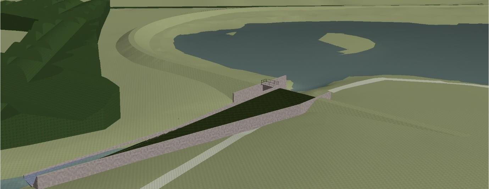

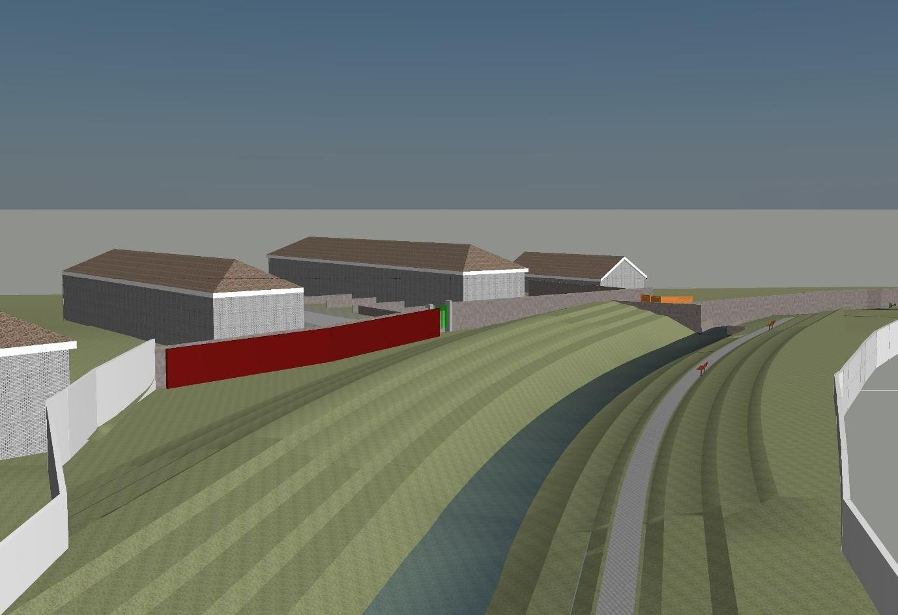
Culverts, and where the river comes up
The EIAR’s map study finds that a row of houses on the northern end of Kimmage Road Lower led to the river being culverted there by 1906 to 1909. It comes up again north of Mount Jerome Road, west of Mount Jerome Church, which matches the open stretch on the map. The scheme’s fish survey notes that the culverts have made the lower river impassable to migratory fish, and that the river has limited fisheries value.
The river’s history, from the heritage chapter
The EIAR dates the channel from Balrothery, near Firhouse, to about 1244, with the Firhouse weir possibly as early as the late 12th century. A 1244 inquisition ordered by the justiciar Maurice Fitzgerald looked at how to bring more water to Dublin, and the Dodder weir was enlarged. In 1245 the King directed John FitzGeffrey to finish his hall in the castle and to bring water to it by the summer of 1246. A 1259 inquisition records an agreement between the monks of St Thomas’s and the citizens to make the new watercourse.
The report describes the Tongue, today’s Stone Boat, as a wedge-shaped stone pier at the junction of the Poddle and the City Watercourse, which split the flow to regulate the water reaching the city. The City Watercourse was relied on until 1755, when the Grand Canal supplemented the supply, and it was replaced in the 19th century by the Bohernabreena and Vartry reservoirs. It fed cisterns near James’s Street and later the Grand Canal Basin. The name is recorded as “le Poddell” in 1506.
Tymon Castle, a 15th-century tower house in Tymon Park, was demolished in 1960, and the site is a recorded monument. The report notes that the Wainsfort Manor Crescent mill, weir and millrace listed in the protected structures record could not be found on historic maps or on the ground.

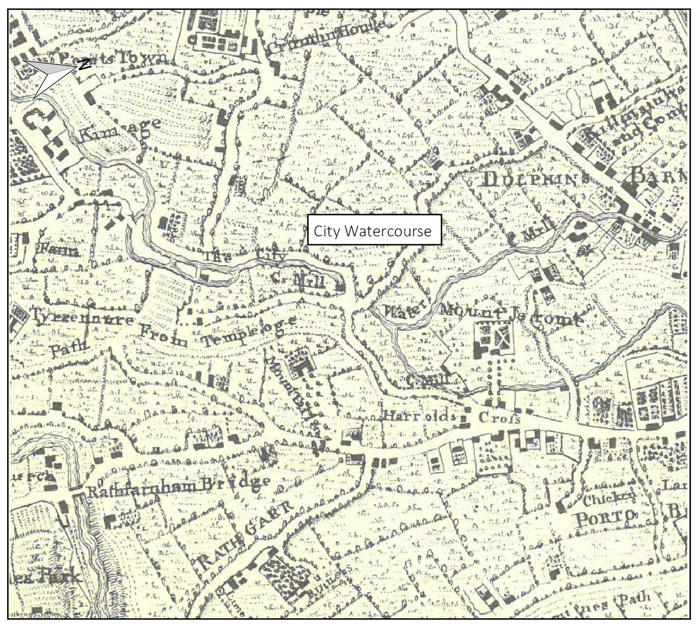

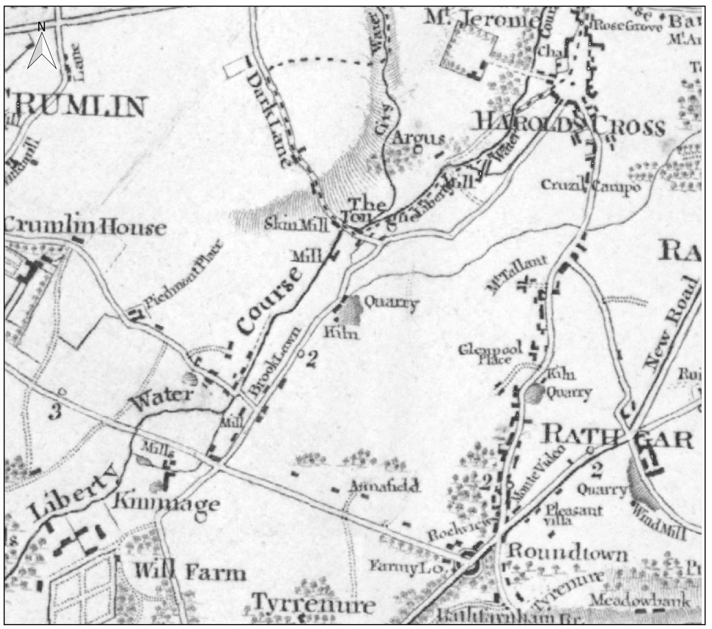

What the digs found
Of 40 archaeological investigations within 250 m of the scheme, several found the medieval watercourses. Test pits at St Teresa’s Gardens found thick, water-laid silts from a medieval watercourse, and two investigations at Ruben Street found the medieval City Watercourse. At Cork Street the south side of the diverted Poddle was exposed. At the Mercy Convent on Cork Street, the remains of tanning boxes were found where the 1866 map shows a tan yard.
Closer to the city, archaeologists working at Tenters Blackpitts, off Mill Street, in 2005, 2007 and 2016 found a possible river channel with a medieval organic layer in it, a red-brick culvert that cuts through older cobbling about half a metre below the ground, and the tanneries shown on Roque’s map of 1756, including two de-hairing barrels. The 2007 report says that the middle of the site was heavily disturbed by building the Poddle culvert and its overflow.

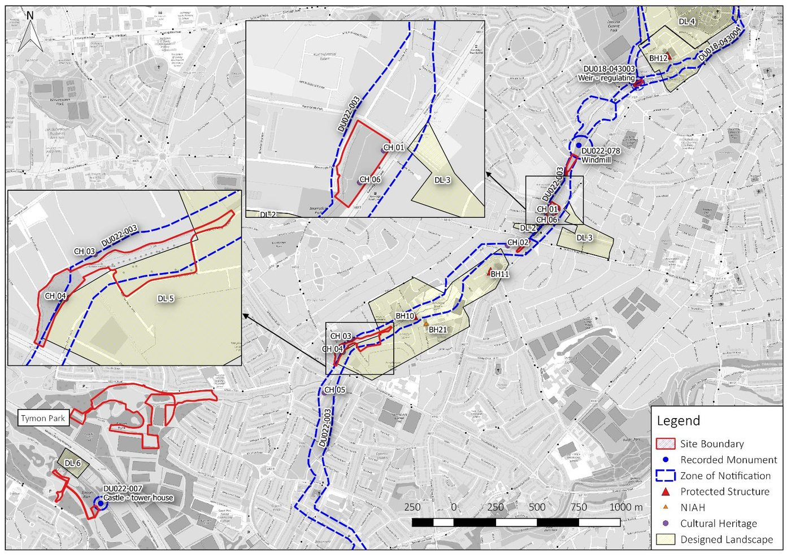

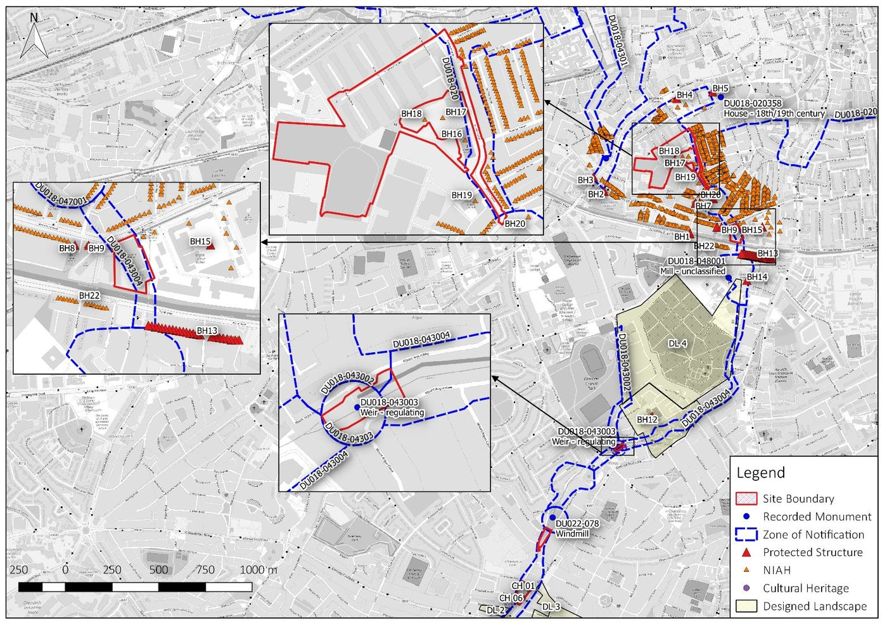
The official record of the watercourses
The heritage chapter’s appendix reproduces the National Monuments Service record for the City Watercourse. It describes the Tongue, the “wedge-shaped stone” that divided the watercourse of the Poddle and the Dodder, in the words of Weston St John Joyce in 1912. Two thirds of the flow went to the city by way of Greenmount, under the canal at Goodbody’s factory, then to Blackpitts, New Row and Patrick Street, past St Patrick’s Cathedral, and east through Castle Street and Palace Street to Wellington Quay, where it entered the Liffey. The other branch went north at the Tongue to Dolphin’s Barn, and then along an elevated rampart known as the Back of the Pipes, or the Pipes, to the old City Basin near James’s Street.
The same record, drawing on H. F. Berry in 1891, says the watercourse was built in the middle of the 13th century, with its head at Balrothery, in Tallaght. It flowed north-east, skirting the churchyard wall at Templeogue, and was joined by the Poddle at Mount Down Flour Mills. From there the two ran as one stream to the Tongue at Kimmage. A large cistern was built around 1670 on or near the ancient reservoir, which is thought to have been west of St Thomas’s Abbey. Berry also wrote about an inquisition of 1258, which the EIAR dates to 1259.
Later writers add numbers for the mills. J. Hegarty records that in 1844 Robert Mallet listed 24 mills at work on the Dodder, 12 on the main stream and the rest on the City Watercourse. B. Mac Giolla Phádraig dates the weir at Firhouse to 1254, and says there were 32 mills in 1879, as well as factories, breweries and distilleries on its banks. He also records that a stream taken off the watercourse in Terenure supplied three fishponds.
The National Monuments Service gives map references for some of these places. Its Tongue record sits where the Stone Boat is on the map, and a recorded mill site at Harold’s Cross sits beside Greenmount. A watercourse was recorded at Reuben Street, and Donore Castle, a medieval castle mentioned in 1228, is recorded at White Swan Business Park, off Donore Avenue, with no visible trace.
Blackpitts: the culvert on the drawings
The planning drawings for the Tenters development at Blackpitts, lodged with Dublin City Council in April 2009 for BAM Property and drawn by the engineers WYG, include a rare engineering view of the culverts. One sheet is a long section through two existing culverts. In the first, the culvert bed is at about 9.7 metres above Malin Head, its roof at about 11.1 to 11.7, and the ground above at about 11.7 to 12.1, so the culvert lies about two metres down with its roof close to the surface. In the second, the silt was too deep for the survey to find the bed. The proposal reroutes the culvert in a precast concrete box, 1.8 metres wide, with its bed at about 9.65 metres, and the drawings mention underpinning installed under an earlier planning permission (4685/05) to keep an old archway.
These show the river as a working piece of drainage under a modern site, about two metres below the street, and match what the archaeologists found a few years later: a brick culvert cutting through older cobbling, and river channel deposits beneath.

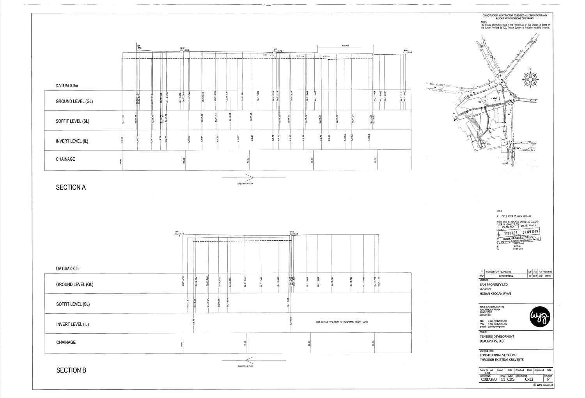

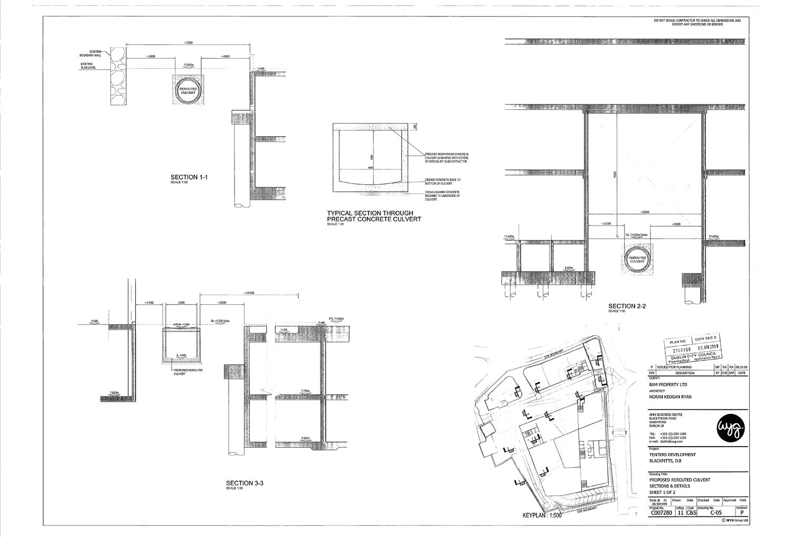
Donore Avenue: keeping clear of the culvert
The 2006 application for a mixed-use development on Donore Avenue, by the engineers Lohan and Donnelly and Collins Maher Martin Architects, shows the culverted Poddle running diagonally across the site, which was then a printing works beside the White Swan Business Park. The drainage drawing marks a strip along the river line “Poddle keep 6 m distance”, and the building is set back from it. The drawing also shows a 300 mm local authority sewer under Donore Avenue, and the surface-water design attenuates a 1-in-30-year storm in 23.26 cubic metres of storage so that the site does not add to the load on the old drains.

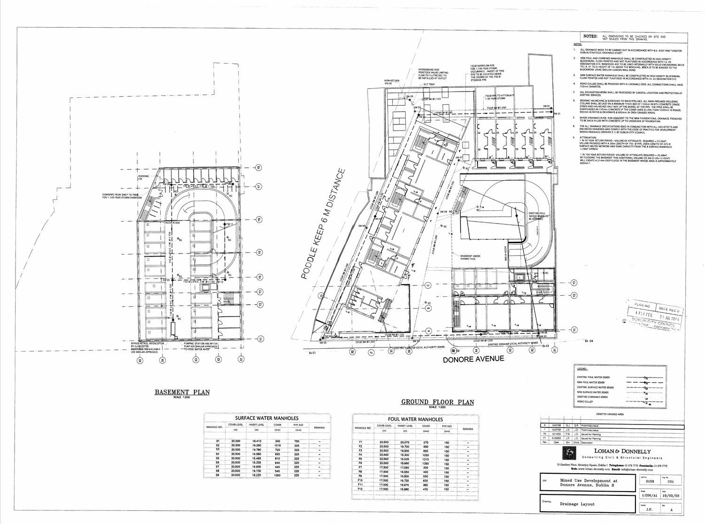

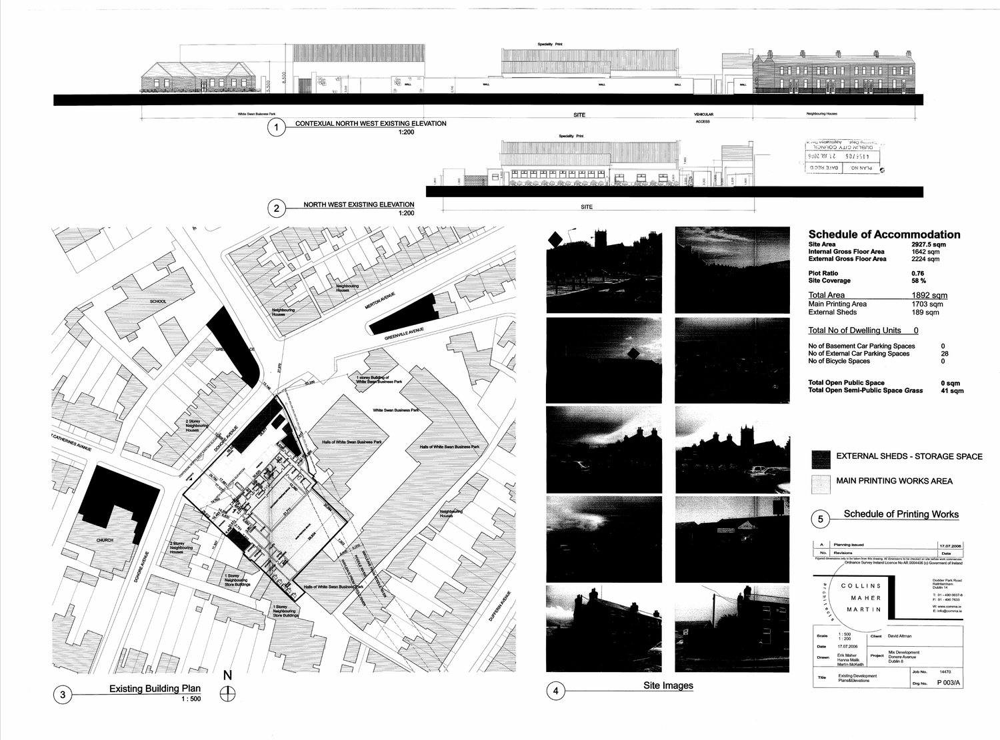
New Row South: the culvert and the mill race
The 2019 application for 27 to 29 New Row South, at the junction of Blackpitts and Fumbally Lane (Dublin City Council planning ref 4423/19, for TC Fumbally Properties Ltd), is a hotel and shared-living scheme of 4 to 8 storeys round a protected former laundry building. The Poddle runs under it. The engineers’ report from J.J. Campbell & Associates says the river is enclosed in a culvert along the eastern boundary of the site, with no manholes or access points inside the site. The nearest manhole, on Fumbally Lane, has a cover level of 11.074 m, and the new ground floor is more than a metre higher.
The flood risk assessment by JBA Consulting (5 November 2019) says the Poddle is a culverted watercourse along the south-eastern boundary and that the culvert system then runs north-north-east to the Liffey, 50 m west of the Ha’penny Bridge. It uses the Eastern CFRAM model: the site is in Flood Zone C, with a small strip along the southern boundary in Zone B. At the 1% flood the modelled depth is 0.25 m, and 0.5 m at the 0.1% flood, only at the corner of Blackpitts and Fumbally Lane. The modelled 1% flow in the culvert at the node 155 m downstream is 2.26 cubic metres a second. The report says the flooding would come from water surcharging out of the system upstream, where the culvert on Donore Avenue is too small, and running overland to the site from the west. It found no recorded flooding on the site, and notes that the October 2011 flood did not reach it.
The engineers agreed the design with Dublin City Council’s drainage department on 12 July 2019 and discussed the culvert with its Flood Projects and Water Framework Directive Division. Their proposal keeps a clear 3 m on each side of the culvert, with a 4 m high corridor above it for an excavator. Three columns on drilled steel-lined piles are proposed where a protected wall bridges over the culvert, and the foundations are designed so that no building load reaches it. Their correspondence says the same approach was used on the neighbouring site, where about 3.7 m of headroom was provided. A local objector argued that 3 m might not be enough given the piling needed, and the planner’s report recorded that concern.
The archaeology report from the city archaeologist records that the site lies in the zone of constraint for a Recorded Monument and the zone of archaeological interest. The archaeological impact assessment by Franc Myles (4 November 2019) found the ground floors of three late 17th-century Dutch Billy houses below the present slab, and identified the Poddle culvert and a culverted mill race within the site. The Newmarket and Blackpitts area was developed in the 17th century as a commercial and industrial district, and the report calls the site one of significant industrial heritage. Work down to formation level is to be monitored by an archaeologist, and any deposits above formation level excavated. The planner’s report of 30 March 2020, after further information received on 4 March 2020, recommends a grant of permission with conditions, including drainage conditions.
Ship Street and the Castle: the line through the city
The engineering report for the Ship Street office and convention centre, lodged in 2018 for a site between Ship Street Great and Chancery Lane, has a page on the Poddle. It cites Clair Sweeney’s Rivers of Dublin, which says the river is culverted or piped for about 4 km through the city, and that its exact historic line is not known, although the section through Dublin Castle is well documented. The river ran parallel with Patrick Street, divided into two or more courses down the west and east sides of the street as far as Ross Road and the site of the southern city wall. It then ran along the walls and the castle ramparts, around the Royal Chapel, and out at the Lower Castle Gate at Palace Street and Dame Street. The report also reproduces a map from D. McEntee and M. Corcoran’s study The Rivers Dodder and Poddle: Mills, Storms, Droughts and the Public Water Supply.
Boreholes sunk on the site in 2005 found made ground to between 3 and 5 metres below the surface, glacial till down to about 9 metres, and limestone bedrock between 7 and 9 metres down. The application includes a Dublin City Council drainage record map at 1:1000, dated 16 March 2016, showing the sewers around Ship Street, Chancery Lane and Golden Lane. That shows the kind of record the council will supply for a site: the sheet carries a warning that it is supplied from the corporation’s record sheets without prejudice, and that its accuracy must be checked on site.

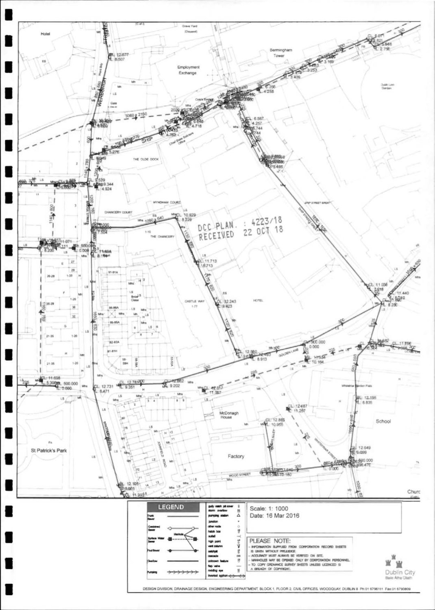
Floods back to 1905
A floodinfo.ie report attached to the Ship Street application, produced on 25 May 2016, lists the floods recorded for the area. For the Poddle and its tributary it shows Limekiln Lane on 24 August 1905, St Claire’s Avenue and Limekiln Lane on 3 September 1931, a tributary at Marrowbone Lane on 21 January 1941, Clanbrassil Street and Mount Jerome at Harold’s Cross in the storm of 11 June 1963 that also flooded Grafton Street and Rathmines, the Poddle in August 1986, and Mount Argus Road and Kimmage Road Lower on 24 October 2011.
Options and the edge of the scheme
The report compares two designs. Option 1 raised walls along the whole river, some of them 2 m or higher: 44 separate defences over 3.8 km, with pumping stations to pass surface-water runoff over the lines. The chosen Option 2 stores water upstream instead, and needs only 27 defences over 1.5 km. The application describes the works as running from Tymon North, Tallaght, to Marrowbone Lane in the city. An Bord Pleanála asked for further information on 17 July 2020, and the applicants answered on 19 October 2020, with new material on natural flood management, Whitehall Park and St Martin’s Drive.
The mills in the report
The heritage chapter lists the mills it found on historic maps. They are described on the mill sites page, which now includes Cutlers Mill and its millrace, a flour mill in the Kimmage demesne, Tinker Mill, and the Domville or Mount Down Mill at Templeogue, where the old records say the Poddle met the City Watercourse.
Watch and read
- EIAR Volume 2, main report (An Bord Pleanála case 306725)
- EIAR Chapter 11: archaeology, architecture and cultural heritage
- EIAR Volume 1: non-technical summary
- Planning report, February 2020
- Dublin City Council presentation on the scheme
- Excavations.ie: Tenters Blackpitts, 2007 testing
- Excavations.ie: Tenters Blackpitts, 2016 monitoring